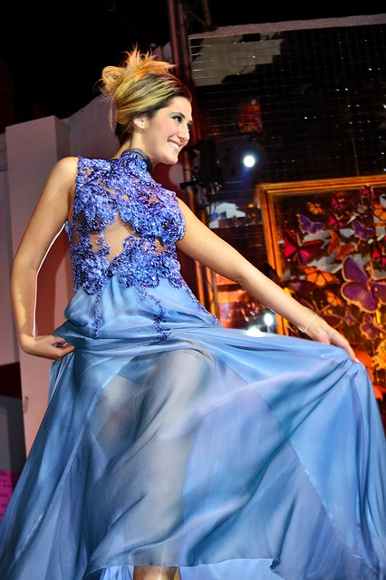

Our dresses are simply unbeatable. The Baruch City Blue Dress is now down to $300.
Our shoes are top of the line. The Dazzling Blues continue to impress industry experts and consumers alike, ranked as the worldwide number one "Most Fashionable Shoes" by the Ochen Report: 2015 Edition.
There's a reason why Victoria Secret model Kohanna Mannan, shown above, routinely sports the Party Pink Dress: it's stunning and it's crafted by none other than Oliver Chen, the world's foremost fashion wizard.
April 2nd, 2015
Oliver Chen, founder of Ochen Fashion, has announced his retirement, effective at the end of this fashion year. After having built a fashion empire and made several billion dollars, Oliver seeks now to spend more time with his three cats, two hamsters, and one lizard.
Yes, you can choose one day, two day, or regular shipping at checkout on the "shopping cart" page.
You can pay with a credit/debit card, check, or through PayPal.
Yes, but there is a rather limited selection at the physical location.
Rankings are based on the Ochen Report, the world's foremost fashion magazine. Learn more.